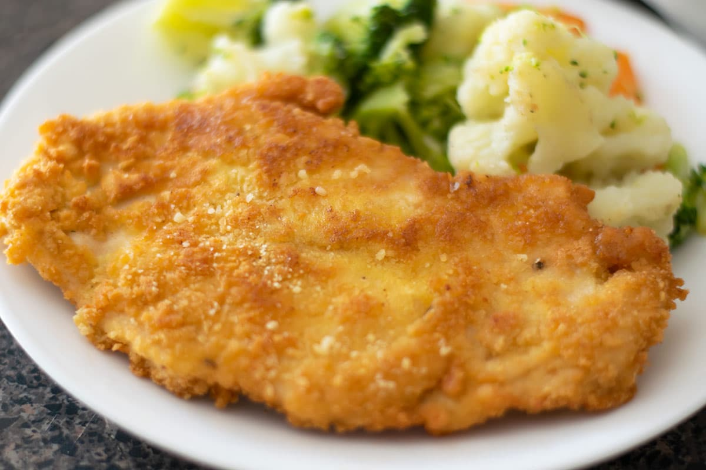

Milañesa

Description
Milañesa de Pollo is a classic dish that originates from Mexico and is enjoyed with rice and beans.
Ingredients
- 1/2 Lb Boneless Skinless Chicken Breast
- 1 Cup bread crumbs
- 2 Whole Eggs
- 1/2 Cup Olive Oil or Frying Oil
- 1/2 Tbsp Salt
- 1/2 Tbsp Pepper
Steps
Before starting, make sure your work area is clean and has all ingredients ready to use
- Cut Chicken breast to have a height of less than 1 Inch, pulverize if necessary
- Whisk eggs on a shallow or bowl plate
- Mix all dry ingredients (Bread Crumbs, Salt, and Pepper) on a shallow plate
- Move Chicken Breast into the plate with Whisked Eggs and coat the Chicken Breast in it
- Move Chicken Breast from the Egg plate and lay it on the Bread Crumb mix
- Coat Chicken Breast in Bread Crumb mix, layering it on multiple times
- Place a Pan onto the stove and turn on the heat to Medium
- After the Pan has been heated, pour the Oil onto the Pan
- When a shimmer becomes apparent on the Oil, place the Chicken Breast onto the Pan
- Cook Chicken Breast, 4 Minutes Each Side
- Place your Milañesa on a plate and serve